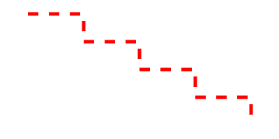

DashPath()
语法
DashPath(Width.d, Length.d [, Flags [, StartOffset.d]])概要
Draw the current drawing path as a series of dashes of equal length and distance.
By default, the path is reset after calling this function. This can be prevented with the appropriate flags.
参数
Width.d Specifies the width for the dashed line. This value does not include any round/square line ends. Length.d Specifies the length of each dash (and the space between the dashes). Flags (可选) Specifies optional characteristics for the drawn dashes. This can be a combination of the following values: #PB_Path_Default : No special behavior (default value) #PB_Path_Preserve : Don't reset the path after this function #PB_Path_RoundEnd : Draw the dashes with a rounded ends #PB_Path_SquareEnd : Draw the dashes with a square box at the ends #PB_Path_RoundCorner : Draw the dashes with rounded corners #PB_Path_DiagonalCorner: Draw the dashes with diagonally cut cornersStartOffset.d (optional) Specifies the distance to skip within the dash pattern before starting to draw the path. The default value is 0.
返回值
无.
示例
If OpenWindow(0, 0, 0, 400, 200, "VectorDrawing", #PB_Window_SystemMenu | #PB_Window_ScreenCentered) CanvasGadget(0, 0, 0, 400, 200) If StartVectorDrawing(CanvasVectorOutput(0)) MovePathCursor(40, 20) For i = 1 To 4 AddPathLine(80, 0, #PB_Path_Relative) AddPathLine(0, 40, #PB_Path_Relative) Next i VectorSourceColor(RGBA(255, 0, 0, 255)) DashPath(5, 15) StopVectorDrawing() EndIf Repeat Event = WaitWindowEvent() Until Event = #PB_Event_CloseWindow EndIf
参阅
FillPath(), StrokePath(), DotPath(), CustomDashPath(), IsInsideStroke(), ResetPath()
已支持操作系统
所有